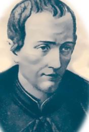

San Pompilio María Pirrotti
Una vida dedicada a Dios y a la educación
Conocé la vida de un sacerdote escolapio que dedicó su existencia a enseñar, ayudar y transmitir su fe.
Su historia
Domingo Pirrotti nació el 29 de septiembre de 1710 en Montecalvo Irpino, Italia. Fue el sexto de diez hermanos.
A los 15 años decidió dejar su hogar para dedicarse a Dios e ingresar a las Escuelas Pías de Nápoles. Allí adoptó el nombre de Pompilio, en recuerdo de su hermano fallecido.
Fue ordenado sacerdote en 1734 y dedicó su vida a la educación, la predicación y el acompañamiento espiritual de las personas.
Su misión escolapia
San Pompilio se destacó por su trabajo como educador y sacerdote. Enseñaba a sus alumnos con humildad, paciencia y caridad.
También dedicaba tiempo a predicar, escuchar confesiones y acompañar espiritualmente a quienes buscaban acercarse a Dios.
Su testimonio y legado
Su vida estuvo marcada por la humildad, la alegría, la solidaridad y el amor al prójimo.
Ayudaba a los pobres, enfermos y necesitados. También tenía una profunda devoción por la Virgen María y la Eucaristía.
Falleció el 15 de julio de 1766 y fue canonizado por el papa Pío XI en 1934.
Momentos importantes de su vida
1710
Nace en Montecalvo Irpino, Italia.
1725
Decide ingresar a las Escuelas Pías.
1734
Es ordenado sacerdote.
1766
Fallece en Campi Salentina, Italia.
1934
Es canonizado por el papa Pío XI.
Las palabras de San Pompilio
"Estemos alegres y echemos a un lado los lamentos. Amemos a Dios y todo marchará bien".
"Sé santo, sé un verdadero hijo del gran Calasanz".
¿Cuánto aprendiste sobre San Pompilio?
Muy pronto podrás poner a prueba tus conocimientos.